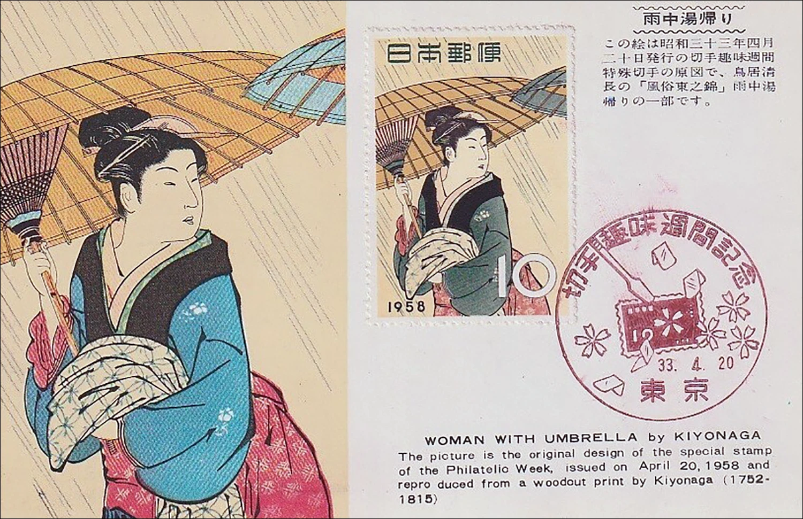
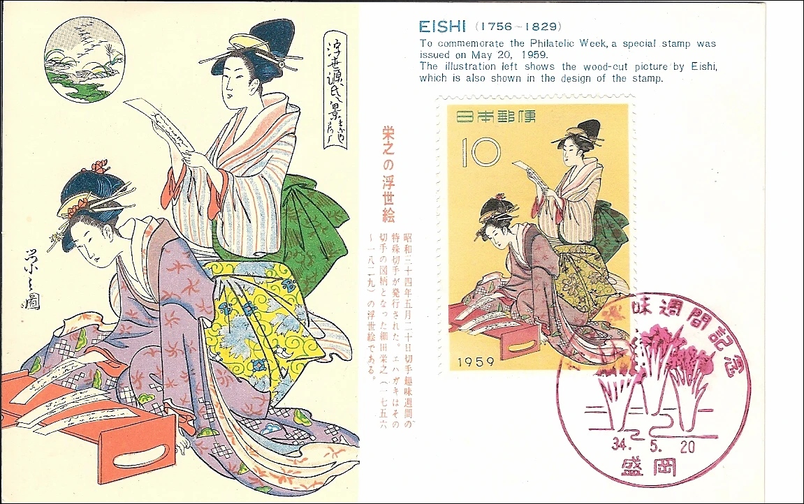
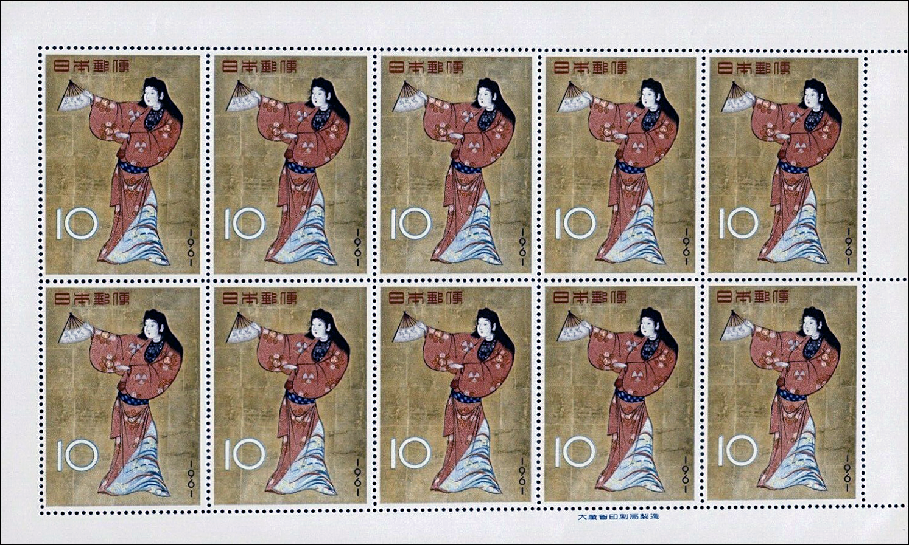
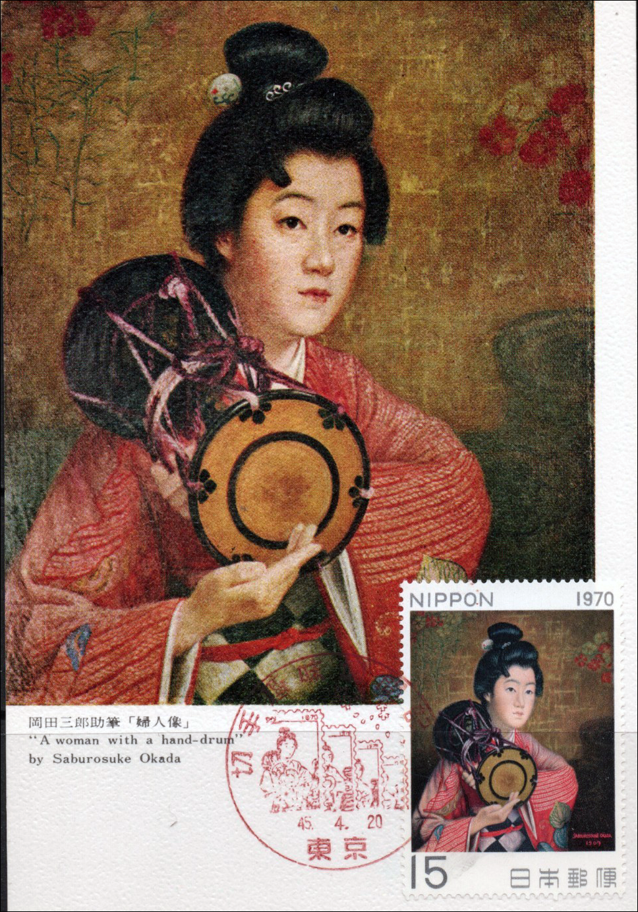
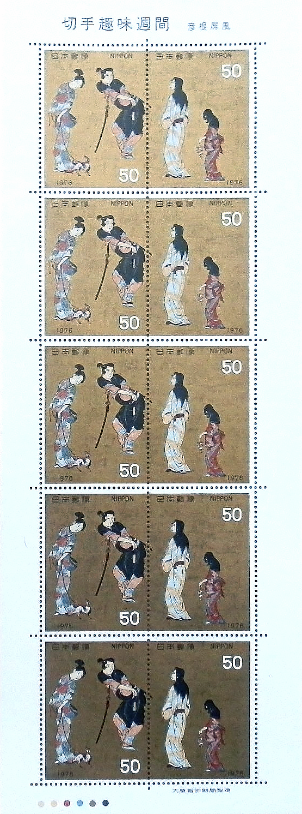
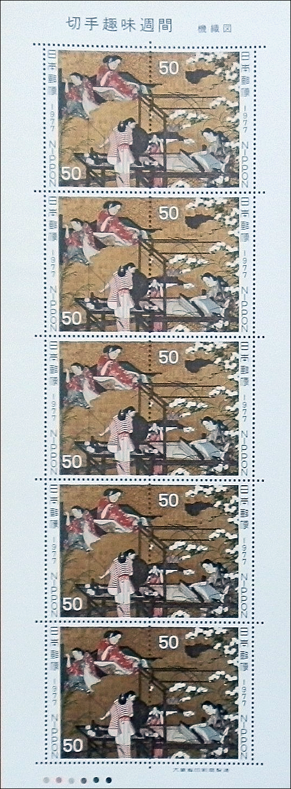
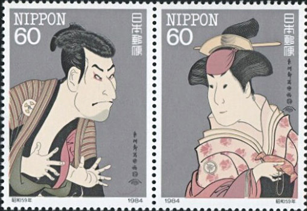

Japan Art Series
Japan pioneered the long-running presentation of fine art on postage stamps. Its Philatelic Week series began in 1955 with a work by Kitagawa Utamaro, preceding the French art series launched in 1961. Woodblock prints, painted folding screens and modern painting together reveal the breadth of Japanese visual culture.
1958 – Torii Kiyonaga
Woman with Umbrella. Kiyonaga (1752–1815) was a leading ukiyo-e artist, celebrated for graceful figures and scenes of urban life.

1959 – Chōbunsai Eishi
Ladies Reading Poems. Eishi (1756–1829) developed an elegant style of depicting women, often with elongated silhouettes.

1961 – Philatelic Week
A complete sheet of ten stamps, illustrating the continuing tradition of Japanese figure painting.

1970 – Saburosuke Okada
Woman with a Hand Drum. Okada (1869–1939) combined Western oil-painting techniques with Japanese subjects.

1976–1977 – Japanese folding screens
The 1976 and 1977 Philatelic Week sheets celebrate the decorative richness of Japanese screen painting. The earlier issue reproduces a detail of the Hikone folding screen, while the later issue depicts weavers and dyers, reflecting the importance of textile craftsmanship in Japanese genre painting.


1984 – Kabuki theatre
The theatrical world of ukiyo-e is represented by expressive actor portraits.

Explore Japanese art on stamps
Japan Philatelic Week – Art on Stamps